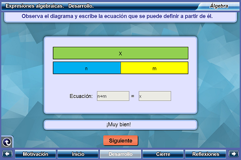
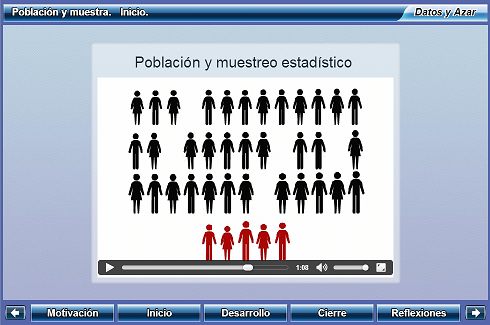
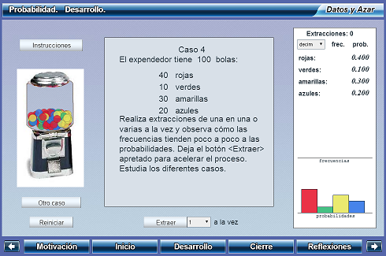
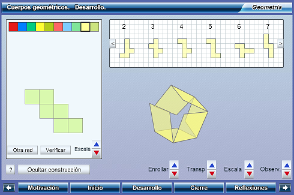
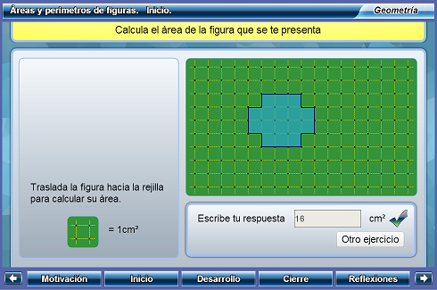
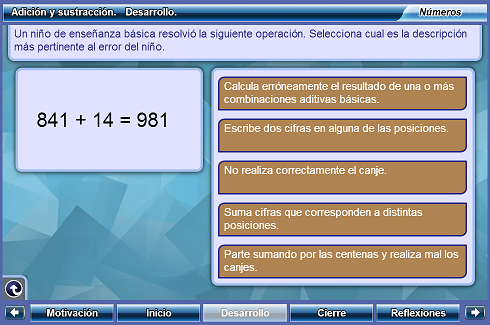
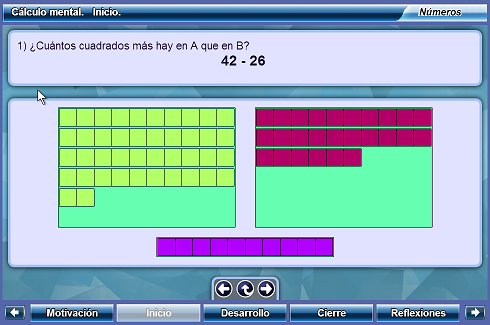

|
|
|
R1_Expresiones_algebraicas  Descargar |
Expresiones algebraicas
Objetivo: Comprender el uso de diagramas de barra como medio de representaci칩n previo al planteamiento de ecuaciones de primer grado. Área: Matem치ticas, Algebra elemental |
|
|
R2_Muestreo  Descargar |
Poblaci칩n y muestra
Objetivo: Comprender las condiciones para que una muestra sea representativa de la poblaci칩n. Área: Matem치ticas, Estad칤stica |
|
|
R3_Probabilidad  Descargar |
Probabilidad
Objetivo: Construir la noci칩n de probabilidad a partir del registro de frecuencias relativas en un experimento aleatorio. Área: Matem치ticas, Probabilidad |
|
|
R4_Redes_del_cubo  Descargar |
Redes del cubo
Objetivo: Construir todas las redes del cubo y decidir que condiciones debe cumplir un hexamin칩 para que efectivamente sea una red del cubo. Área: Matem치ticas, Geometr칤a |
|
|
R5_Areas_y_perimetros  Descargar |
Areas y per칤metros
Objetivo: Comprender las nociones de 치rea y per칤metro en el caso de pol칤gonos irregulares con v칠rtices en coordenadas enteras y desarrollar estrategias para calcularlas. Área: Matem치ticas, Geometr칤a |
|
|
R6_Adicion_y_sustraccion  Descargar |
Adici칩n y sustracci칩n
Objetivo: Comprender errores y di cultades que tienen ni침os y ni침as en el c치lculo de adiciones y sustracciones usando el algoritmo usual. Área: Matem치ticas, Aritm칠tica |
|
|
R7_Calculo_mental  Descargar |
C치lculo mental
Objetivo: Comprender el funcionamiento de t칠cnicas de c치lculo mental de adiciones y sustracciones. Área: Matem치ticas, Aritm칠tica |
|
que implemente el Canvas de HTML5, como por ejemplo: Google Chrome, Mozila Firefox o Safari |